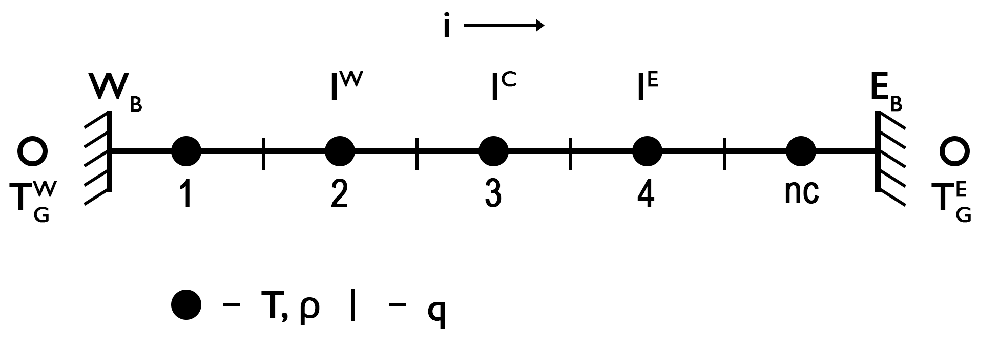

Heat Diffusion Equation (1D)
In one dimension, the diffusive component of the temperature conservation equation is expressed as follows, assuming only radiogenic heat sources:
\[\begin{equation} \rho c_p\frac{\partial T}{\partial t} = -\frac{\partial q_x}{\partial x} + Q, \end{equation}\]
where $\rho$ is the density [kg/m³], $c_p$ is the specific heat capacity [J/kg/K], $T$ is the temperature [K], $t$ is the time [s], $q_x$ is the thermal heat flux in the $x$-direction, and $Q$ is the volumetric heat production rate [W/m³]. By incorporating Fourier’s law and allowing for spatially variable thermal properties, the equation becomes:
\[\begin{equation} \rho c_p\frac{\partial T}{\partial t} = \frac{\partial}{\partial x} \left( k_x \frac{\partial T}{\partial x} \right) + Q, \end{equation}\]
where $k_x$ is the thermal conductivity [W/m/K] in the $x$-direction. Assuming constant thermal properties, Equation (2) simplifies to:
\[\begin{equation} \frac{\partial T}{\partial t} = \kappa \frac{\partial^2 T}{\partial x^2} + \frac{Q}{\rho c_p}, \end{equation}\]
where $\kappa = k/\rho/c_p$ is the thermal diffusivity [m²/s].
Equation (3) is classified as a parabolic partial differential equation (PDE), which can be solved numerically given appropriate initial and boundary conditions.
Discretization and Numerical Schemes
To solve Equation (3) numerically, the spatial domain must be discretized, assigning physical parameters to their corresponding grid locations.
Note: Although thermal conductivity is currently assumed to be constant, a conservative, staggered gridding approach is employed to ensure physical consistency. In this scheme, temperature $T$ is defined at cell centers (centroids), while heat flux $q$ is defined at cell interfaces (vertices).

Figure 1. 1D Discretization. Staggered finite difference grid for solving the 1D heat diffusion equation. Temperature is defined at centroids, while heat flux is defined at vertices. Ghost nodes are introduced to implement Dirichlet and Neumann boundary conditions.
To solve the equation at each centroid using a finite difference (FD) discretization, one must also consider the temperature values at the adjacent points. The positions of these points in the FD scheme are usually defined by the numerical stencil. For the 1D heat diffusion equation, this is a three-point stencil, which includes a central point (the reference centroid) and points to the East and West of it.
The indices of these points define the positions of the coefficients in the coefficient matrix for each equation in the linear system of equations. For a numerical three-point stencil the indices are then defined by:
\[\begin{equation}\begin{split} I^\textrm{W} & = I^\textrm{C} - 1,\\\ I^\textrm{C} & = I, \\\ I^\textrm{E} & = I^\textrm{C} + 1, \end{split}\end{equation}\]
where $I$ is the equation number, which corresponds to the local index $i$ and the central position of the three-point stencil ($C$), and $I^\textrm{W}$, and $I^\textrm{E}$, are the points West and East of it. These are the indices of the three-point stencil used in the discretized FD equations below.
A detailed implementation of various numerical schemes to solve a linear problem is provided in the example script Heat1Ddiscretization.jl. This example demonstrates the application of several discretization methods for solving the 1D heat diffusion equation:
- Explicit scheme
- Implicit scheme
- Crank–Nicolson approach
The numerical results are compared with the analytical solution of a Gaussian temperature distribution to assess accuracy and performance. Additional scripts show how to solve the 1D heat diffusion equation using the general, combined solver for a non-linear problem. The name of these scripts end with *_dc.jl Below, these well-known schemes are briefly described and their respective strengths and limitations highlighted.
Temperature Field Management
Within GeoModBox.jl, one needs to distinguish between the centroid field and the extended centroid field, which includes the ghost nodes.
The extended field is used in the linear solver of the explicit (forward Euler) scheme and in the residual calculation for the non-linear solvers using the defect correction. For these solvers, the ghost node temperature values are calculated internally based on the thermal boundary condition, and the extended field is used to numerically solve the PDE.
For the solvers that involve a coefficient matrix (e.g., linear implicit schemes and non-linear solvers for constant and variable parameters), only the centroid values are used. That is, the size of the coefficient matrix is determined by the total number of centroids. These solvers internally update the centroid temperatures of the extended field after solving the PDE.
Boundary Conditions
Boundary conditions are implemented using ghost nodes located at $\frac{\Delta x}{2}$ outside the domain boundaries. Within the GeoModBox.jl, the two most common thermal boundary conditions are currently considered: Dirichlet and Neumann.
Dirichlet Boundary Condition
The Dirichlet condition specifies a fixed temperature at the boundary. The temperature at the left (West) and right (East) ghost nodes $T_{\textrm{G}}^W$ and $T_{\textrm{G}}^E$ is given by:
\[\begin{equation} T_{\textrm{G}}^W = 2T_{\textrm{BC}}^W - T_{1}, \end{equation}\]
\[\begin{equation} T_{\textrm{G}}^E = 2T_{\textrm{BC}}^E - T_{\textrm{nc}}, \end{equation}\]
where $T_{\textrm{BC}}^W$ and $T_{\textrm{BC}}^E$ are the prescribed boundary temperatures, $T_1$ and $T_{\textrm{nc}}$ are the temperatures at the first and last centroids, and $\textrm{nc}$ is the number of centroids.
Neumann Boundary Condition
The Neumann condition specifies a fixed gradient (e.g., a heat flux or temperature gradient) across the boundary. The ghost node temperatures are defined as:
\[\begin{equation} T_{\textrm{G}}^W = T_{1} - c^{W} \Delta{x}, \end{equation}\]
\[\begin{equation} T_{\textrm{G}}^E = T_{\textrm{nc}} + c^{E} \Delta{x}, \end{equation}\]
with:
\[\begin{equation} \left. c^{W} = \frac{\partial{T}}{\partial{x}} \right\vert_{W},\ \textrm{and}\ \left. c^{E} = \frac{\partial{T}}{\partial{x}} \right\vert_{E}, \end{equation}\]
where $c^W$ and $c^E$ are the prescribed temperature gradients across the west and east boundaries, respectively. These ghost node values can be substituted into the discretized heat diffusion equation for the internal centroids adjacent to the boundaries. Using ghost nodes consistently enforces the boundary conditions at each time step and preserves the second-order accuracy treatment of the three-point stencil (e.g. Duretz et al., 2011).
Explicit Finite Difference Scheme (FTCS; Forward Euler)
A fundamental and intuitive approach solving the 1D heat diffusion equation is the FTCS scheme, implemented in an explicit manner.
This method approximates the continuous PDE on a discrete grid and converges to the analytical solution as the spatial ($\Delta x$) and temporal ($\Delta t$) resolutions are refined. Its main advantages are simplicity and computational efficiency.
However, the FTCS scheme is conditionally stable. Its stability is governed by the heat diffusion stability criterion, which can be derived via Von Neumann analysis. This assesses how numerical perturbations grow or decay over time.
In the following, we implement the FTCS scheme by combining a three-point stencil in space with a two-point stencil in time.
For a uniform, one-dimensional grid, the stability condition is:
\[\begin{equation} \Delta t < \frac{\Delta{x^2}}{2 \kappa}. \end{equation}\]
Consequently, the maximum allowable time step is constrained by the spatial resolution.
Discretizing Equation (3) with the FTCS scheme gives:
\[\begin{equation} \frac{T_{I^\textrm{C}}^{n+1} - T_{I^\textrm{C}}^{n} }{\Delta t} = \kappa \frac{T_{I^\textrm{W}}^{n} - 2T_{I^\textrm{C}}^{n} + T_{I^\textrm{E}}^{n}}{\Delta{x^2}} + \frac{Q_{I^\textrm{C}}^n}{\rho c_p}, \end{equation}\]
where $I^\textrm{C}$ is the central reference centroid, $n$ is the time step index, $\Delta x$ is the grid spacing, and $\Delta t$ is the time step.
Solving for $T_{I^\textrm{C}}^{n+1}$ gives
\[\begin{equation} T_{I^\textrm{C}}^{n+1} = T_{I^\textrm{C}}^{n} + a \left(T_{I^\textrm{W}}^{n} - 2T_{I^\textrm{C}}^{n} + T_{I^\textrm{E}}^{n} \right) + \frac{Q_{I^\textrm{C}}^n \Delta t}{\rho c_p}, \end{equation}\]
where
\[\begin{equation} a = \frac{\kappa \Delta t}{\Delta x^2}. \end{equation}\]
Equation (12) is solved for all centroids at each time step, assuming initial and boundary conditions are specified. The boundary conditions are implemented using the temperature values calculated for the ghost nodes. For implementation details, see the source code.
Implicit Scheme (Backward Euler)
The fully implicit finite difference scheme, also known as the Backward Euler method, is unconditionally stable, allowing time steps larger than those permitted by the CFL criterion.
In 1D and based on a three-point stencil, the discretized heat diffusion equation becomes:
\[\begin{equation} \frac{T_{I^\textrm{C}}^{n+1}-T_{I^\textrm{C}}^n}{\Delta t} = \kappa \frac{T_{I^\textrm{W}}^{n+1}-2T_{I^\textrm{C}}^{n+1}+T_{I^\textrm{E}}^{n+1}}{\Delta{x^2}} + \frac{Q_{I^\textrm{C}}^n}{\rho c_p}. \end{equation}\]
Rearranging the equation into known (right-hand side) and unknown (left-hand side) terms yields a system of equations considering all internal centroids:
\[\begin{equation} -a T_{I^\textrm{W}}^{n+1} + \left(2a + b \right) T_{I^\textrm{C}}^{n+1} - a T_{I^\textrm{E}}^{n+1} = b T_{I^\textrm{C}}^n + \frac{Q_{I^\textrm{C}}^n}{\rho c_p}, \end{equation}\]
with
\[\begin{equation}\begin{split} a & = \dfrac{\kappa}{\Delta x^2}, \\ b & = \dfrac{1}{\Delta t}. \end{split}\end{equation}\]
These equations are a tridiagonal system of equations in the form of:
\[\begin{equation} \mathbf{K} \cdot \bm{x} = \bm{b} \end{equation}\]
where $\mathbf{K}$ is the coefficient matrix (with three non-zero diagonals), $\bm{x}$ is the unknown solution vector, that is the temperature at time step $n+1$, and $\bm{b}$ is the known right-hand side.
General Solution
A general approach solving this system of equations is the defect correction. The heat diffusion equation is reformulated by introducing a residual term $\bm{r}$, which quantifies the deviation from the true solution and can be reduced iteratively to improve accuracy through successive correction steps. In implicit form, Equation (15) can be rewritten as:
\[\begin{equation} \mathbf{K} \cdot \bm{x} - \bm{b} = \bm{r}, \end{equation}\]
where $\bm{r}$ is the residual (or defect). The coefficients of the matrix are the same as derived above (Equation (16)), but one could also calculate them by the Jacobian of $\bm{r}$ via:
\[\begin{equation} {K_{ij}}=\frac{\partial{{r}_i}}{\partial{{x}_j}}. \end{equation}\]
We can solve for the unknown vector $\bm{x}$ by assuming an initial temperature guess $T^k$, calculating its residual $r$, and performing a correction of the temperature $\delta{T}$. For non-linear problems, the process is repeated iteratively until the residual is sufficiently small. In the linear case, one iteration yields the exact solution.
Given an initial temperature guess $\bm{T}^k$, the initial residual is:
\[\begin{equation} \bm{r}^k = \mathbf{K} \cdot \bm{T}^k - \bm{b}. \end{equation}\]
To reduce the residual, a correction term $\delta \bm{T}$ is defined such that:
\[\begin{equation} 0 = \bm{K} \left(\bm{T}^k + \delta \bm{T} \right) - \bm{b} = \bm{K} \bm{T}^k - \bm{b} + \bm{K} \delta \bm{T} = \bm{r}^k + \bm{K} \delta \bm{T}. \end{equation}\]
Rearranging gives:
\[\begin{equation} \bm{r}^k = -\mathbf{K} \delta \bm{T}, \end{equation}\]
and hence:
\[\begin{equation} \delta \bm{T} = -\mathbf{K}^{-1} \bm{r}^k. \end{equation}\]
Thus, the updated solution becomes:
\[\begin{equation} \bm{T}^{k+1} = \bm{T}^k + \delta \bm{T}, \end{equation}\]
where $\bm{T}^{k+1}$ is the updated temperature after one iteration step.
Within GeoModBox.jl the residual $\bm{r}$ is calculated on the centroids using the extended temperature field including the ghost nodes of the current time step as an initial guess:
\[\begin{equation} \frac{\partial{T_{\textrm{ext,I}}}}{\partial{t}} - \kappa \frac{\partial^2{T_{\textrm{ext,I}}}}{\partial{x^2}} - \frac{Q}{\rho c_p} = r_{I}, \end{equation}\]
and in discretized, implicit finite-difference form:
\[\begin{equation} \frac{T_{\textrm{ext},I^\textrm{C}}^{n+1} - T_{\textrm{ext},I^\textrm{C}}^{n}}{\Delta{t}} - \kappa \frac{T_{\textrm{ext},I^\textrm{W}}^{n+1} - 2 T_{\textrm{ext},I^\textrm{C}}^{n+1} + T_{\textrm{ext},I^\textrm{E}}^{n+1}}{\Delta{x^2}} - \frac{Q_{I^\textrm{C}}^n}{\rho c_p}= r_{I}, \end{equation}\]
where $I^\textrm{C}=2:(nc+1)$ is the index of the centroid of the extended temperature field and $I=1:nc$ is the equation number. Rewriting Equation (26) and substituting the coefficients using Equation (16) results in:
\[\begin{equation} -aT_{\textrm{ext},I^\textrm{W}}^{n+1} +\left(2a+b\right)T_{\textrm{ext},I^\textrm{C}}^{n+1} -aT_{\textrm{ext},I^\textrm{E}}^{n+1} -bT_{\textrm{ext},I^\textrm{C}}^n -\frac{Q_{I^\textrm{C}}^n}{\rho c_p}=r_{I}, \end{equation}\]
which corresponds to the matrix form of Equation (18), where $T_{\textrm{ext},I^\textrm{C}}^{n+1}$ is the unknown vector $x$,$-bT_{\textrm{ext},I^\textrm{C}}^n -\frac{Q_{I^\textrm{C}}^n}{\rho c_p}$ is the known vector $b$, and $-a$ and $2a+b$ are the coefficients of the non-zero diagonals of the coefficient matrix. With the residual vector $\bm{r}$ and the coefficient matrix $\bm{K}$ one can calculate the correction term for the temperature via Equation (23).
Boundary Condition
The boundary conditions are implemented using the temperatures values at the ghost nodes (see Equations (5)-(8)). To maintain symmetry in the coefficient matrix, however, the matrix coefficients must be modified for the centroids adjacent to the boundaries. This is done by substituting the equations for the ghost node temperatures into the equations for the points adjacent to the boundaries. The equations for the centroids adjacent to the boundary are then given by:
Dirichlet Boundary Condition
West Boundary
\[\begin{equation} -aT_{\textrm{G}}^W +\left(2a+b\right)T_{\textrm{ext},I^\textrm{C}}^{n+1} -aT_{\textrm{ext},I^\textrm{E}}^{n+1} -bT_{\textrm{ext},I^\textrm{C}}^n -\frac{Q_{I^\textrm{C}}^n}{\rho c_p}=r_{I}, \end{equation}\]
\[\begin{equation} -a\left(2T_{\textrm{BC}}^W-T_{\textrm{ext},I^\textrm{C}}^{n+1}\right) +\left(2a+b\right)T_{\textrm{ext},I^\textrm{C}}^{n+1} -aT_{\textrm{ext},I^\textrm{E}}^{n+1} -bT_{\textrm{ext},I^\textrm{C}}^n -\frac{Q_{I^\textrm{C}}^n}{\rho c_p}=r_{I}, \end{equation}\]
\[\begin{equation} \left(3a+b\right)T_{\textrm{ext},I^\textrm{C}}^{n+1} -aT_{\textrm{ext},I^\textrm{E}}^{n+1} -bT_{\textrm{ext},I^\textrm{C}}^n -2aT_{\textrm{BC}}^W -\frac{Q_{I^\textrm{C}}^n}{\rho c_p}=r_{I}, \end{equation}\]
East Boundary
\[\begin{equation} -aT_{\textrm{ext},I^\textrm{W}}^{n+1} +\left(2a+b\right)T_{\textrm{ext},I^\textrm{C}}^{n+1} -aT_{\textrm{G}}^E -bT_{\textrm{ext},I^\textrm{C}}^n -\frac{Q_{I^\textrm{C}}^n}{\rho c_p}=r_{I}, \end{equation}\]
\[\begin{equation} -aT_{\textrm{ext},I^\textrm{W}}^{n+1} +\left(2a+b\right)T_{\textrm{ext},I^\textrm{C}}^{n+1} -a\left(2T_{\textrm{BC}}^E-T_{\textrm{ext},I^\textrm{C}}^{n+1}\right) -bT_{\textrm{ext},I^\textrm{C}}^n -\frac{Q_{I^\textrm{C}}^n}{\rho c_p}=r_{I}, \end{equation}\]
\[\begin{equation} -aT_{\textrm{ext},I^\textrm{W}}^{n+1} +\left(3a+b\right)T_{\textrm{ext},I^\textrm{C}}^{n+1} -bT_{\textrm{ext},I^\textrm{C}}^n -2aT_{\textrm{BC}}^E -\frac{Q_{I^\textrm{C}}^n}{\rho c_p}=r_{I}, \end{equation}\]
Neumann Boundary Conditions
West Boundary
\[\begin{equation} -aT_{\textrm{G}}^W +\left(2a+b\right)T_{\textrm{ext},I^\textrm{C}}^{n+1} -aT_{\textrm{ext},I^\textrm{E}}^{n+1} -bT_{\textrm{ext},I^\textrm{C}}^n -\frac{Q_{I^\textrm{C}}^n}{\rho c_p}=r_{I}, \end{equation}\]
\[\begin{equation} -a\left(T_{\textrm{ext},I^\textrm{C}}^{n+1} - c^{W} \Delta{x}\right) +\left(2a+b\right)T_{\textrm{ext},I^\textrm{C}}^{n+1} -aT_{\textrm{ext},I^\textrm{E}}^{n+1} -bT_{\textrm{ext},I^\textrm{C}}^n -\frac{Q_{I^\textrm{C}}^n}{\rho c_p}=r_{I}, \end{equation}\]
\[\begin{equation} +\left(a+b\right)T_{\textrm{ext},I^\textrm{C}}^{n+1} -aT_{\textrm{ext},I^\textrm{E}}^{n+1} -bT_{\textrm{ext},I^\textrm{C}}^n +a c^{W} \Delta{x} -\frac{Q_{I^\textrm{C}}^n}{\rho c_p}=r_{I}, \end{equation}\]
East Boundary
\[\begin{equation} -aT_{\textrm{ext},I^\textrm{W}}^{n+1} +\left(2a+b\right)T_{\textrm{ext},I^\textrm{C}}^{n+1} -aT_{\textrm{G}}^E -bT_{\textrm{ext},I^\textrm{C}}^n -\frac{Q_{I^\textrm{C}}^n}{\rho c_p}=r_{I}, \end{equation}\]
\[\begin{equation} -aT_{\textrm{ext},I^\textrm{W}}^{n+1} +\left(2a+b\right)T_{\textrm{ext},I^\textrm{C}}^{n+1} -a\left(T_{\textrm{ext},I^\textrm{C}}^{n+1} + c^{E} \Delta{x}\right) -bT_{\textrm{ext},I^\textrm{C}}^n -\frac{Q_{I^\textrm{C}}^n}{\rho c_p}=r_{I}, \end{equation}\]
\[\begin{equation} -aT_{\textrm{ext},I^\textrm{W}}^{n+1} +\left(a+b\right)T_{\textrm{ext},I^\textrm{C}}^{n+1} -bT_{\textrm{ext},I^\textrm{C}}^n -ac^{E} \Delta{x} -\frac{Q_{I^\textrm{C}}^n}{\rho c_p}=r_{I}, \end{equation}\]
where $T_{\textrm{BC}}^W$, $T_{\textrm{BC}}^E$ are the prescribed boundary temperatures and $c^W$, $c^E$ are the prescribed temperature gradients at the West and East boundaries, respectively. These adjustments ensure that the boundary conditions are enforced consistently while preserving the symmetry of the implicit solver.
Special Case - A Linear Problem
If the problem is linear and the exact solution is reached within one single iteration step, the system of equations is reduced to Equation (17). Thus, one can solve the system of equations directly via a left matrix division:
\[\begin{equation} \bf{x} = \mathbf{K}^{-1} \bm{b}. \end{equation}\]
The coefficient matrix remains the same, even for the given boundary conditions. However, the right-hand side needs to be updated accordingly (setting $\bm{r}=0$ and adding the known parameters to the right-hand side of the equations). Thus, the equations for the centroids adjacent to the boundaries are defined as:
Dirichlet Boundary Condition
West boundary
\[\begin{equation} \left(3 a + b\right) T_{I^\textrm{C}}^{n+1} - a T_{I^\textrm{E}}^{n+1} = b T_{I^\textrm{C}}^{n} + 2 a T_{\textrm{BC}}^W, \end{equation}\]
East boundary
\[\begin{equation} -a T_{I^\textrm{W}}^{n+1} + \left(3 a + b\right) T_{I^\textrm{C}}^{n+1} = b T_{I^\textrm{C}}^{n} + 2 a T_{\textrm{BC}}^E, \end{equation}\]
Neumann Boundary Condition
West boundary
\[\begin{equation} \left(a + b\right) T_{I^\textrm{C}}^{n+1} - a T_{I^\textrm{E}}^{n+1} = b T_{I^\textrm{C}}^{n} - a c^{W} \Delta{x}, \end{equation}\]
East boundary
\[\begin{equation} -a T_{I^\textrm{W}}^{n+1} + \left(a + b\right) T_{I^\textrm{C}}^{n+1} = b T_{I^\textrm{C}}^{n} + a c^{E} \Delta{x}. \end{equation}\]
Crank-Nicolson approach (CNA)
The fully implicit FTCS method is unconditionally stable but only first-order accurate in time. To improve temporal accuracy while retaining stability, the Crank-Nicolson scheme can be used. This method employs a time-centered (implicit) discretization and is second-order accurate in time.
In 1D, the Crank-Nicolson discretization of the heat diffusion equation becomes:
\[\begin{equation} \frac{T_{I^\textrm{C}}^{n+1} - T_{I^\textrm{C}}^{n}}{\Delta t} = \frac{\kappa}{2}\frac{(T_{I^\textrm{W}}^{n+1}-2T_{I^\textrm{C}}^{n+1}+T_{I^\textrm{E}}^{n+1})+(T_{I^\textrm{W}}^{n}-2T_{I^\textrm{C}}^{n}+T_{I^\textrm{E}}^{n})}{\Delta{x^2}} + \frac{Q_{I^\textrm{C}}}{\rho c_p}. \end{equation}\]
Rearranging into known and unknown terms yields a linear system of the form:
\[\begin{equation} -aT_{I^\textrm{W}}^{n+1} + \left(2a+b\right)T_{I^\textrm{C}}^{n+1} - a T_{I^\textrm{E}}^{n+1} = aT_{I^\textrm{W}}^{n} - \left(2a-b\right)T_{I^\textrm{C}}^{n} + a T_{I^\textrm{E}}^{n} + \frac{Q_{I^\textrm{C}}}{\rho c_p}, \end{equation}\]
where:
\[\begin{equation}\begin{split} a & = \frac{\kappa}{2\Delta{x^2}},\\ b & = \frac{1}{\Delta{t}}. \end{split}\end{equation}\]
These equations form a three-diagonal system of equations in the form:
\[\begin{equation} \mathbf{K_1}\cdot{x}=\mathbf{K_2}\cdot{T^n}+b, \end{equation}\]
where $\mathbf{K_i}$ are the coefficient matrices (with three non-zero diagonals), $x$ is the unknown solution vector (the temperature at time step $n+1$), and $b$ is the heat generation term.
Note: Here, $\bm{b}$ only contains radiogenic heat sources. Additional heat sources, such as shear heating, adiabatic heating or latent heating, can simply be added to the vector.
General Solution
The residual at the centroids using the Crank–Nicolson discretization is calculated via:
\[\begin{equation} \mathbf{K_1}\cdot{\bm{x}}-\mathbf{K_2}\cdot{T_{}^n}-\bm{b}=\bm{r}. \end{equation}\]
The correction term and the updated temperature within the iteration for the solution are calculated as in the implicit general solution (Equations (23) and (24)).
Within GeoModBox.jl, the extended temperature field is used to discretize the equation in space and time and to calculate the residual at the centroids, leading to:
\[\begin{equation}\begin{gather*} & -aT_{\textrm{ext},I^\textrm{W}}^{n+1}+\left(2a + b\right)T_{\textrm{ext},I^\textrm{C}}^{n+1} -aT_{\textrm{ext},I^\textrm{E}}^{n+1} \\ & -aT_{\textrm{ext},I^\textrm{W}}^{n}+\left(2a - b\right)T_{\textrm{ext},I^\textrm{C}}^{n} -aT_{\textrm{ext},I^\textrm{E}}^{n}- \frac{Q_{I^\textrm{C}}}{\rho c_p} = \bm{r}_{I}, \end{gather*}\end{equation}\]
where $I^\textrm{C}$ is the global, central reference point of the three-point stencil on the extended temperature field for the centroids and $I$ is the equation number (in 1D these are actually the same). This corresponds to the matrix form of Equation (49).
Boundary Conditions
As with the implicit method, to maintain symmetry in the coefficient matrices the coefficients must be modified for the nodes adjacent to the boundaries. The equations for the centroids adjacent to the boundary are then given by:
Dirichlet Boundary Conditions
West boundary
\[\begin{equation}\begin{gather*} & \left(3a + b\right) T_{\textrm{ext},I^\textrm{C}}^{n+1} -a T_{\textrm{ext},I^\textrm{E}}^{n+1} \\ & +\left( 3a - b\right)T_{\textrm{ext},I^\textrm{C}}^{n} - a T_{\textrm{ext},I^\textrm{E}}^{n} - 4 a T_{\textrm{BC}}^W - \frac{Q_{I^\textrm{C}}}{\rho c_p} = \rm{r}_{I}, \end{gather*}\end{equation}\]
East boundary
\[\begin{equation}\begin{gather*} & - a T_{\textrm{ext},I^\textrm{W}}^{n+1} + \left(3a + b\right) T_{\textrm{ext},I^\textrm{C}}^{n+1} \\ & -a T_{\textrm{ext},I^\textrm{W}}^{n} + \left( 3a - b \right)T_{\textrm{ext},I^\textrm{C}}^{n} - 4 a T_{\textrm{BC}}^E - \frac{Q_{I^\textrm{C}}}{\rho c_p}=\bm{r}_{I}, \end{gather*}\end{equation}\]
Neumann Boundary Conditions
West boundary
\[\begin{equation}\begin{gather*} & \left(a + b \right) T_{\textrm{ext},I^\textrm{C}}^{n+1} - a T_{\textrm{ext},I^\textrm{E}}^{n+1} \\ & +\left( a - b\right) T_{\textrm{ext},I^\textrm{C}}^{n} - a T_{\textrm{ext},I^\textrm{E}}^{n} + 2 a c^W \Delta{x} - \frac{Q_{I^\textrm{C}}}{\rho c_p} = \bm{r}_{I}, \end{gather*}\end{equation}\]
East boundary
\[\begin{equation}\begin{gather*} & -a T_{\textrm{ext},I^\textrm{W}}^{n+1} + \left(a + b\right) T_{\textrm{ext},I^\textrm{C}}^{n+1} \\ & -a T_{\textrm{ext},I^\textrm{W}}^{n} + \left( a - b \right) T_{\textrm{ext},I^\textrm{C}}^{n}- 2 a c^E \Delta{x} - \frac{Q_{I^\textrm{C}}}{\rho c_p} = \bm{r}_{I}, \end{gather*}\end{equation}\]
For implementation details, refer to the source code.
Similar to the pure implicit scheme, there is a special case for solving this system of equations if the system is linear. In that case, the heat diffusion equation reduces to Equation (48) and can be solved directly via left matrix division. The coefficient matrices remain the same, even for the given boundary conditions. However, the right-hand side must be updated accordingly (setting $\bm{r}=0$ and adding the known parameters to the right-hand side of the equations).
Within GeoModBox.jl, the general solution to a non-linear system of equations using either the explicit, implicit, or Crank–Nicolson discretization scheme, assuming constant thermal parameters and using the extended temperature field (including the ghost nodes), is implemented in a combined form as:
\[\begin{equation} \frac{\partial{T}}{\partial{t}} -\kappa\left( \left(1-\mathbb{C}\right)\frac{\partial^2{T_{\textrm{ext}}^{n+1}}}{\partial{x^2}} +\mathbb{C}\frac{\partial^2{T_{\textrm{ext}}^{n}}}{\partial{x^2}}\right) -\frac{Q}{\rho c_p}=\bm{r}, \end{equation}\]
where $\mathbb{C}$ is a constant defining the discretization approach:
\[\begin{equation} \mathbb{C} = \begin{cases} 0\text{, for implicit} \\ 0.5\text{, for CNA} \\ 1\text{, for explicit} \end{cases}. \end{equation}\]
Fully expanded and separating the known and unknown terms leads to:
\[\begin{equation}\begin{gather*} & -aT_{\textrm{ext},I^\textrm{W}}^{n+1}+bT_{\textrm{ext},I^\textrm{C}}^{n+1} -aT_{\textrm{ext},I^\textrm{E}}^{n+1} \\ & -cT_{\textrm{ext},I^\textrm{W}}^{n}+dT_{\textrm{ext},I^\textrm{C}}^{n} -cT_{\textrm{ext},I^\textrm{E}}^{n} - \frac{Q_{I^\textrm{C}}}{\rho c_p} = \bm{r}_{I}, \end{gather*}\end{equation}\]
where the coefficients are:
\[\begin{equation}\begin{split} \begin{split} a & = \frac{\left(1-\mathbb{C}\right)\kappa}{\Delta{x^2}} \\ b & = 2a+\frac{1}{\Delta{t}} \\ \end{split} \quad\quad \begin{split} c & = \frac{\mathbb{C}\kappa}{\Delta{x^2}} \\ d & = 2c-\frac{1}{\Delta{t}} \\ \end{split} \end{split}.\end{equation}\]
Equation (57) corresponds to the matrix form of Equation (49). With the residual vector $\bm{r}$ and the coefficient matrix $\bm{K_1}$ one can calculate the correction term for the temperature via Equation (23). For implementation details, see the source code, and an example on how to use the general, combined solver is given here.
Summary
While the explicit FTCS scheme is simple and efficient for small time steps, implicit methods like Backward Euler and Crank-Nicolson are preferred for their unconditional stability. The defect correction provides a flexible framework for both linear and nonlinear problems, allowing for iterative refinement when needed. The Crank-Nicolson scheme further improves accuracy with its second-order time discretization.
Variable Thermal Parameters
To solve the 1D heat diffusion equation including variable thermal parameters, we focus on the general solution in a combined form, given by:
\[\begin{equation} \rho c_p \frac{\partial{T}}{\partial{t}} +\left(1-\mathbb{C}\right)\frac{\partial{q_x^{n+1}}}{\partial{x}} +\mathbb{C}\frac{\partial{q_x}^{n}}{\partial{x}} -Q=\bm{r}. \end{equation}\]
where $q_x$ is the heat flux in the horizontal direction and is defined as:
\[\begin{equation} q = - k_x\frac{\partial{T}}{\partial{x}}, \end{equation}\]
and $k_x$ is the thermal conductivity in $x$-direction. This combined formulation of the heat diffusion equation enables a solution using either the explicit, implicit, or CNA discretization scheme.
Discretizing the equation in space and time yields:
\[\begin{equation}\begin{gather*} & \rho_{I^\textrm{C}} c_{p,I^\textrm{C}}\left(\frac{T_{I^\textrm{C}}^{n+1} - T_{I^\textrm{C}}^{n}}{\Delta{t}}\right) \\ & +\left(1-\mathbb{C}\right)\left( \frac{q_{x,I^\textrm{E}}^{n+1} - q_{x,I^\textrm{C}}^{n+1}}{\Delta{x}} \right) +\mathbb{C}\left( \frac{q_{x,I^\textrm{E}}^{n} - q_{x,I^\textrm{C}}^{n}}{\Delta{x}} \right) \\ & -Q_{I^\textrm{C}} = r_{I}, \end{gather*}\end{equation}\]
where $I$ is the equation number and $I^\textrm{C}$ is the central reference point of the numerical stencil of the corresponding field (see Figure 1). By applying Fourier's law, the equation becomes:
\[\begin{equation}\begin{gather*} & \rho_{I^\textrm{C}} c_{p,I^\textrm{C}}\left( \frac{T_{I^\textrm{C}}^{n+1} - T_{I^\textrm{C}}^{n}}{\Delta{t}}\right) + \\ & +\left(1-\mathbb{C}\right)\left( \frac{-k_{x,I^\textrm{E}}\frac{T_{I^\textrm{E}}^{n+1}-T_{I^\textrm{C}}^{n+1}}{\Delta{x}} +k_{x,I^\textrm{C}}\frac{T_{I^\textrm{C}}^{n+1}-T_{I^\textrm{W}}^{n+1}}{\Delta{x}}} {\Delta{x}} \right) \\ & +\mathbb{C}\left( \frac{-k_{x,I^\textrm{E}}\frac{T_{I^\textrm{E}}^{n}-T_{I^\textrm{C}}^{n}}{\Delta{x}} +k_{x,I^\textrm{C}}\frac{T_{I^\textrm{C}}^{n}-T_{I^\textrm{W}}^{n}}{\Delta{x}}} {\Delta{x}} \right) \\ & -Q_{I^\textrm{C}} = r_{I}. \end{gather*}\end{equation}\]
Rewriting this in a matrix-compatible form leads to:
\[\begin{equation}\begin{gather*} & -aT_{I^\textrm{W}}^{n+1} +bT_{I^\textrm{C}}^{n+1} -cT_{I^\textrm{E}}^{n+1} \\ & -dT_{I^\textrm{W}}^{n} +eT_{I^\textrm{C}}^{n} -fT_{I^\textrm{E}}^{n} \\ & -Q_{I^\textrm{C}} = r_{I} \end{gather*},\end{equation}\]
which corresponds to the matrix form of Equation (49). The coefficients of the matrix $\mathbf{K_1}$ for the unknown $\bm{x}$ are:
\[\begin{equation}\begin{split} a & = \frac{\left(1-\mathbb{C}\right)k_{x,I^\textrm{C}}}{\Delta{x^2}} \\ b & = \frac{\rho_{I^\textrm{C}} c_{p,I^\textrm{C}}}{\Delta{t}} +\left(1-\mathbb{C}\right)\left(\frac{k_{x,I^\textrm{E}}}{\Delta{x^2}} + \frac{k_{x,I^\textrm{C}}}{\Delta{x^2}}\right) \\ c & = \frac{\left(1-\mathbb{C}\right)k_{x,I^\textrm{E}}}{\Delta{x^2}} \\ \end{split}\end{equation}\]
and the coefficients of the matrix $\mathbf{K_2}$ for the known $T^n$ are:
\[\begin{equation}\begin{split} d & = \frac{\mathbb{C}k_{x,I^\textrm{C}}}{\Delta{x^2}} \\ e & = -\frac{\rho_{I^\textrm{C}} c_{p,I^\textrm{C}}}{\Delta{t}} +\mathbb{C}\left(\frac{k_{x,I^\textrm{E}}}{\Delta{x^2}} + \frac{k_{x,I^\textrm{C}}}{\Delta{x^2}}\right) \\ f & = \frac{\mathbb{C}k_{x,I^\textrm{E}}}{\Delta{x^2}} \\ \end{split}.\end{equation}\]
With the residual vector $\bm{r}$ and the coefficient matrix $\mathbf{K_1}$ one can calculate the correction term for the temperature via Equation (23). The correction is then used to update the initial temperature guess. This process is repeated until the residual is considered sufficiently small.
Boundary Conditions
For centroids adjacent to the boundaries, ghost nodes are used to evaluate the temperature gradient consistently with the chosen thermal boundary condition (Dirichlet or Neumann). These ghost node values are computed according to equations (7)–(10). The ghost node temperatures are the substituted in the equations for the centroids adjacent to the boundaries (see previous examples).
For implementation details, refer to the source code.